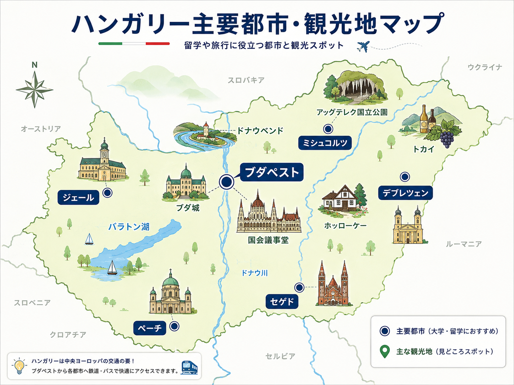
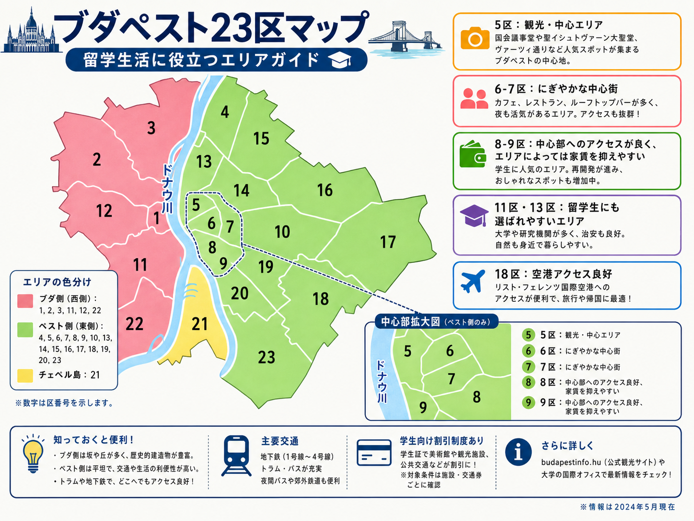

ハンガリーってどんな国？
留学前に知っておきたい基本情報
国・都市・交通・気候などの要点をまとめました。詳しい使い方や留学準備は、各項目のGuideで確認できます。
まずこれだけ｜ハンガリーの基本

ハンガリーは中央ヨーロッパに位置するEU加盟国です。
通貨はユーロではなく、 ハンガリー・フォリント（HUF / Ft） を使用しています。
| 項目 | 内容 |
|---|---|
| 首都 | ブダペスト |
| 通貨 | ハンガリー・フォリント（HUF / Ft） |
| 公用語 | ハンガリー語 |
| EU | 加盟国 |
| シェンゲン圏 | 加盟 |
| 主な大学都市 | ブダペスト、デブレツェン、セゲド、ペーチ、ジェールなど |
ハンガリーは、オーストリア、スロバキア、ウクライナ、ルーマニア、 セルビア、クロアチア、スロベニアと国境を接しています。
円で考える際は、その日の為替レートを確認してください。「1 Ft＝0.5円なら金額を2で割る」は計算例であり、固定の換算レートではありません。
1. ハンガリーの主要都市

| 都市 | 位置・特徴 |
|---|---|
| ブダペスト | 首都。大学、公共交通、商業施設が集まる都市。 |
| デブレツェン | 東部の大学都市。 |
| セゲド | 南部、ティサ川沿いの大学都市。 |
| ペーチ | 南西部の大学都市。 |
| ジェール | 北西部、オーストリア方面への移動にもつながる都市。 |
学ぶ分野だけでなく、都市の規模、住居、大学までの移動も確認しましょう。
2. 主な観光地
ブダペストのドナウ川沿いの景観をはじめ、バラトン湖、ドナウベンド、ワイン産地トカイ、伝統的な村ホッローケー、アッグテレクの洞窟などがあります。大学生活の合間に国内各地を訪れることもできます。
3. ブダペストは23区に分かれる

ブダペストはドナウ川の両岸に広がり、23の区に分かれています。西側のブダ、東側のペストなど、エリアによって街並みや大学への通いやすさが異なります。
4. 公共交通と空港アクセス


ブダペストでは地下鉄、トラム、バスなどを利用できます。地方都市へは鉄道や長距離バスで移動します。
空港から中心部へは直通の100E、または200E＋地下鉄M3などの方法があります。券の種類や乗り換えは、利用する経路に合わせて確認しましょう。
5. 気候｜四季があり、夏も冬も備えが必要
春・夏・秋・冬の四季があります。夏は猛暑になることがあり、冬には氷点下になる日もあります。渡航する季節に合わせて服装を用意し、住居の冷暖房も確認しましょう。
6. 言語｜公用語はハンガリー語
英語開講のプログラムでは授業は基本的に英語です。一方、店舗、住居、行政手続きなどではハンガリー語が必要になる場面もあります。
7. 電源｜日本のプラグはそのまま使えない
ハンガリーの電源は230V・50Hz。日本とプラグ形状が異なります。日本の機器を使う前に、プラグ形状と対応電圧を確認してください。
8. 大学生活・住居・治安の要点
- 多くの大学で、履修・試験・学期の登録にNeptunを使います。
- 大学に寮があっても、自分が必ず入寮できるとは限りません。
- 観光地や混雑した交通機関では、貴重品の管理に注意しましょう。
9. 生活費・食料品の物価
生活費は住む都市、住居、自炊や外食の頻度によって変わります。食料品の価格は、KSHの全国平均を目安として別のGuideで確認できます。
物価は地域によっても異なります。地域別の物価はこちらで確認してください。
10. Stipendium Hungaricumの概要
ハンガリー政府の奨学金Stipendium Hungaricumには、授業料免除、生活費支援、住居支援、医療保険などがあります。学士・修士等の生活費支援は月額43,700 Ft、住居支援は大学寮または月額40,000 Ftの補助が基本です。
生活費全額を賄う制度ではありません。入寮条件・継続条件などは大学とその年度の公式案内を確認しましょう。